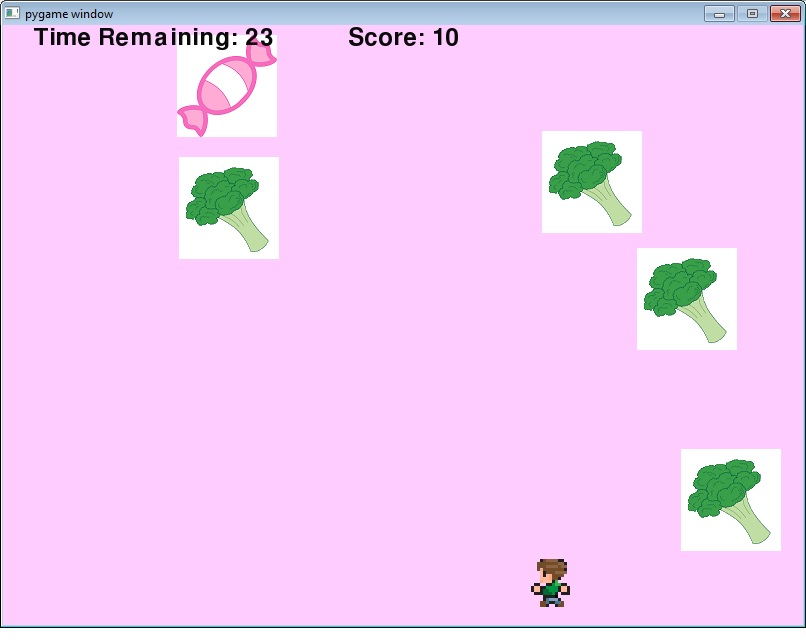
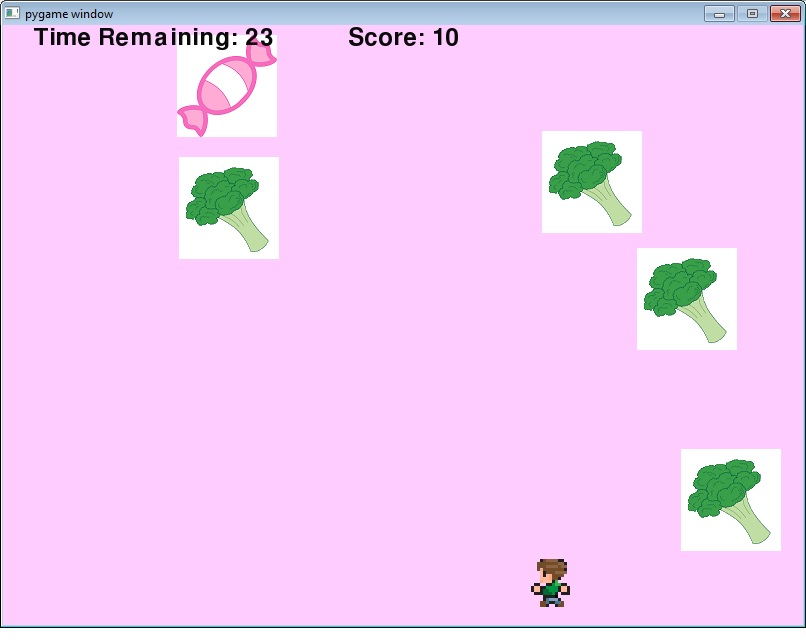

Final Project Content
 

Candy Catcher pt.2 is a game in which the user’s goal is to avoid the vegetables and to catch the candy. After each level, more vegetables will be added. The vegetables will randomly go across the screen while the candy will randomly change its location each time it is caught. The user’s score will increase by 1 each time they catch a candy, but if a candy isn’t caught, the score will remain the same. If the user accidentally catches a vegetable, the game will be over. To begin, the use will have 60 seconds to complete the task. In the first version of Candy Catcher, there were only two levels, so in Candy Catcher pt.2, I intend to add more levels. In the new levels, a carrot will be used as the vegetable instead of a broccoli because it is a bigger object to avoid and will make the game more difficult. I will also add a nicer background to the game (it is currently a plain white screen). I am also going to change it so that you only have to catch 5 candies to move onto the next level because as additional vegetables are added, it seems nearly impossible to win the game.